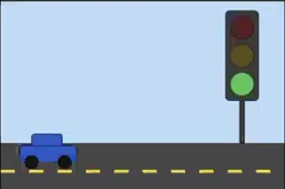

Session 02 · Sunday, November 15 · 7–9 a.m. PT / 10 a.m.–noon ET
Make decisions visible
A shape that moves, a light that decides, and a traffic light that only knew how to
turn red. We put motion and an if inside draw(), then fixed
Joshua Hans’s traffic light starter in breakout rooms, and put the light on a timer.
Java ideas
The draw loop, if, else if, and nested ifs, a boolean flipped with !, a String state compared with .equals, a distance check with Math.sqrt, and counting frames with a counter or %.
AP link
AP CS A Unit 2, where the course covers decisions and loops: Boolean expressions, if statements, and comparing objects. Outside AP: a first lesson on conditionals or animation, or any lesson built on predict, run, investigate, modify, make.
Files
session-2-files.zip: the traffic light starter, a finished version, and a timer version; the two mini-lecture sketches; the directions; and the bouncing-ball sketches and debugging lab for extra practice.
You leave with
A traffic light that answers clicks, a car that obeys it, and two ways to put the light on a timer.
Already happened: read the November 15 recap for what people shared and said. This page has the sketches and the steps.
Teaching this session? Use the slides and the facilitator guide, which was written before the session. Joshua’s traffic light replaced the guide’s breakout task.
Missed it? Follow On your own, about 60 minutes. Missed Session 1? You can still start here. The traffic light does not build on the stamp scene.
What happened · Sunday, November 15
Four parts
The session followed the plan in the guide until the breakout rooms, which used Joshua’s traffic light. The guest could not join and will be rescheduled. Loops were saved for later.
Part 1About 40 min
Shared stamp scenes. A snowman drawn around the wrong point, Math.random(), arc, scale, and the scene moved into a regular Java project. In the recap.
Part 2About 10 min
The draw loop and one if. Saber’s mini-lecture: a car that wraps around and a bus that doesn’t, then a stoplight that a boolean runs. Wraparound and Stoplight in the download.
Part 3About 45 min
From a scene to a traffic light. Joshua asked where mushrooms may grow, then ran the traffic light as PRIMM, with two breakout rooms and a debrief.
Part 4About 20 min
The light on a timer. In the guest’s slot: a counter and frameCount % 180, stopping the car where it is, and extension ideas.
Part 3 · With Joshua Hans · PRIMM
A traffic light that only turns red
Open visible java traffic in Pickcode, or TrafficLight from the download in the Processing editor. The light starts on green and the car does not move yet. Read the code before you run it.

String state = "green";
float carX = 40;
// drawRoad(), drawLight(), and drawCar() are in the file.
// drawLight() makes a light bright when state names it, and dull otherwise.
public void mousePressed() {
double d = calculateDistance(mouseX, mouseY, 510, 55);
if (d <= 25) {
state = "red";
}
}
public double calculateDistance(int x1, int y1, int x2, int y2) {
return Math.sqrt(Math.pow(x2 - x1, 2) + Math.pow(y2 - y1, 2));
}
Predict. What will you see? What happens when you click each light?
only red answers Clicking red turns it on and dims green. Clicking yellow or green does nothing, before or after. The car stays where it is the whole time, because nothing changes carX.
Investigate. Why can’t you get back to green?
one distance, one lightmousePressed() measures the distance from the mouse to (510, 55), the center of the red light, and nothing else. The other lights are at (510, 115) and (510, 175). Each light is 50 across, so a click within 25 of a center is inside it.
Modify. Make yellow and green clickable.
Make. Drive on green, slow on yellow, stop on red. As a bonus, wrap the car around the screen.
One way to make all three lights clickable
public void mousePressed() {
double redDistance = calculateDistance(mouseX, mouseY, 510, 55);
double yellowDistance = calculateDistance(mouseX, mouseY, 510, 115);
double greenDistance = calculateDistance(mouseX, mouseY, 510, 175);
if (redDistance <= 25) {
state = "red";
} else if (yellowDistance <= 25) {
state = "yellow";
} else if (greenDistance <= 25) {
state = "green";
}
}
A click anywhere else leaves state as it was. To move the car, let the light set a speed and always add it: carSpeed is 3 on green, 1 on yellow, and 0 on red, and carX = carX + carSpeed; runs every frame. Setting carX = 0 on red sends the car back to the left edge instead of stopping it. TrafficLightCheckpoint has all of it, with a wraparound.
Facilitator notes
The state is a String on purpose, so students compare with .equals. == asks whether two variables refer to the same object, which sometimes works and cannot be trusted.
One room printed all three distances on every click. Watching which number dropped below 25 explained the condition better than reading it, and clicks at the edge of a light gave values like 26. The other room talked the light changes through in words before writing code. Both worked.
Questions from the debrief worth keeping: should the distance call go inside the if or into named variables? What should a click outside every light do? Could each light be its own object? Session 3 starts from that last one.
Part 4 · Two ways to count
Put the light on a timer
Make the light change by itself every few seconds. Say the process in words first. Processing counts frames in frameCount, about 60 a second, and a sketch cannot set it back to zero.
// Your own counter: easier to explain
counter = counter + 1;
if (counter >= 180) {
changeLight();
counter = 0;
}
// Modulo: shorter
if (frameCount % 180 == 0) {
changeLight();
}
Both change the light every 180 frames, about three seconds. changeLight() moves green to yellow, yellow to red, and red to green. Start with the counter. Students who write ifs for 180, 360, and 540 feel the problem that % solves. Printing frameCount next to frameCount % 180 shows the second number climbing to 179 and returning to 0.
Want more? A pedestrian button that stops the car no matter what, a sky that moves from day to night, or a sun that follows a sine wave. More in the recap.
Extra practice · planned, not taught live
The bouncing ball and a debugging lab
Everything below was written before the session, as the original plan. It was not taught live. Use it for more practice with conditions: a ball that turns at the walls, a boundary case to step through, the same decisions in plain Java, and a debugging lab with three planted bugs. The sketches are in the same download.
Extra practice · Predict
One new line of logic
This is Session 1’s checkpoint with one if added at the end. Before anyone presses Run, answer the two questions. Then open WallBall from the download and run it.
float x = 0;
float y = 0;
float xSpeed = 1.5;
float ySpeed = 2;
void setup() {
size(400, 400);
}
void draw() {
background(255);
circle(x, y, 40);
x = x + xSpeed;
y = y + ySpeed;
if (y > height - 20) {
ySpeed = -ySpeed;
}
}
What will you see when it runs?
one bounce, then gone The ball drifts down and to the right as before, bounces off the bottom about three-quarters of the way across, then heads up and to the right. It leaves through the right edge about halfway up, a little under five seconds in. Nothing checks the right edge, so nothing stops it.
The if is checked every frame. On how many frames is its condition true?
one Frame 191, when y reaches 382. The question is asked about 60 times a second, and the answer is “no” every time but once. After the flip, ySpeed is negative and y only gets smaller.
Facilitator notes
Collect answers to question 1 in the chat before running. Many people expect the ball to bounce off the right wall too. The sketch does exactly what the condition says, and the condition only asks about y. That gap between “what I meant” and “what I wrote” is the whole session.
Anyone whose sketch doesn’t run goes to Your first sketch with a co-facilitator. Anyone who missed Session 1 can start right here: WallBall contains Session 1’s checkpoint.
Extra practice · Live coding
Slow it down at the wall, then break it
The facilitator runs WallTrace: a ball moving sideways toward the right wall
at one frame per second, printing x and xSpeed after each
frame’s decision. Write your answers to questions 3–6 first.
float x = 350;
float xSpeed = 15;
void setup() {
size(400, 400);
frameRate(1);
}
void draw() {
background(255);
circle(x, 200, 40);
x = x + xSpeed;
if (x > width - 20 || x < 20) {
xSpeed = -xSpeed;
}
println("frame " + frameCount + ": x = " + x + ", xSpeed = " + xSpeed);
if (frameCount == 6) {
noLoop();
}
}
What does the console print for frame 1?
frame 1: x = 365.0, xSpeed = 15.0 The line prints after the move and after the decision. 365 is nowhere near a wall, so nothing flips.
On which frame does xSpeed first turn negative, and what is x then?
frame 3: x = 395.0, xSpeed = -15.0 On frame 2, x is exactly 380, and 380 is not greater than 380. On frame 3 the ball overshoots to 395, and only then does the if turn it around. The wall doesn’t stop the ball. It only changes the speed afterward. Values right at the edge of a condition are called boundary cases, and this is one.
Break it: change || to &&. What happens?
it never turns aroundx goes 365, 380, 395, 410, 425, 440, and the ball leaves. No number is both greater than 380 and less than 20, so the condition can never be true. One question finds this kind of bug: “What value would make this true?”
Undo that. Now break it differently: start at float x = 390;. What happens?
it shivers in placeframe 1: x = 405.0, xSpeed = -15.0, then frame 2: x = 390.0, xSpeed = 15.0, and the same two lines forever. The ball starts past the wall. One step back still leaves it past the wall, so the condition is true again and the speed flips back. The rule is fine. The starting state breaks it.
What Processing hides
In the build you will add a key. Nothing in your code calls keyPressed(), just as nothing called draw(). Here is the shape of the loop Processing runs. It is not real code.
// Not real code: the shape of the loop.
setup();
while (the window is open) {
draw();
for (each key that went down
since the last frame) {
key = that key;
keyPressed();
}
wait for the next frame;
}
keyPressed() is an event. Processing calls it once each time a key goes down, after a draw() and before the next one.
keyPressed with no parentheses is a state: a variable that is true while any key is held down. Reading it inside draw() sees the same press on several frames in a row. The debugging lab has that bug in it.
Facilitator notes
Take a poll on question 4 before running. A split between frame 2 and frame 3 is the boundary-case conversation, and it lands better here than as a rule about > and >=.
Questions 5 and 6 are the two broken conditions students write most: one that can never be true, and one that stays true. Name them that way, because the debugging lab uses those words.
The order in the right-hand side is real: Processing 4 calls draw(), then handles the keys that arrived. Nobody needs more than that.
In the session, trace one file together in about five minutes, and run the rest on your own. The test: the output must match the WallTrace console line for
line. Run each file with any method from Running plain Java.
public class WallTrace {
public static void main(String[] args) {
double x = 350;
double xSpeed = 15;
for (int frame = 1; frame <= 6; frame++) {
x = x + xSpeed;
if (x > 380 || x < 20) {
xSpeed = -xSpeed;
}
System.out.println("frame " + frame + ": x = " + x + ", xSpeed = " + xSpeed);
}
}
}
frame 1: x = 365.0, xSpeed = 15.0
frame 2: x = 380.0, xSpeed = 15.0
frame 3: x = 395.0, xSpeed = -15.0
frame 4: x = 380.0, xSpeed = -15.0
frame 5: x = 365.0, xSpeed = -15.0
frame 6: x = 350.0, xSpeed = -15.0
Identical. The condition didn’t change at all. width - 20 became 380, because plain Java has no window to measure.
Keys become data
AP Java has no keyboard events. So KeyTrace.java gets its keys as a String, one character per frame, with . for a frame where nothing was pressed. Write all eight lines first.
public class KeyTrace {
public static void main(String[] args) {
String keys = "..p.p...";
double x = 350;
double xSpeed = 15;
boolean paused = false;
for (int frame = 1; frame <= keys.length(); frame++) {
char key = keys.charAt(frame - 1);
if (key == 'p') {
paused = !paused;
}
if (!paused) {
x = x + xSpeed;
if (x > 380 || x < 20) {
xSpeed = -xSpeed;
}
}
System.out.println("frame " + frame + ": x = " + x + ", paused = " + paused);
}
}
}
frame 1: x = 365.0, paused = false
frame 2: x = 380.0, paused = false
frame 3: x = 380.0, paused = true
frame 4: x = 380.0, paused = true
frame 5: x = 395.0, paused = false
frame 6: x = 380.0, paused = false
frame 7: x = 365.0, paused = false
frame 8: x = 350.0, paused = false
The p on frame 3 is handled before the move, so frame 3 doesn’t move. The p on frame 5 unpauses, and the ball moves on that same frame, overshoots to 395, and turns. keyPressed() became an if at the top of the loop.
Facilitator notes
Have people paste their WallTrace output next to the sketch’s console. A mismatch is usually the print placed before the if, which is a good conversation about where a decision happens in a frame.
If someone asks whether the key should be handled before or after the move: each character is the key that arrived before its frame, which is when Processing would handle it.
Extra practice · Guided practice with Joshua Hans
Walls, a key, and a pattern
Work in WallBall. Before each run, say what you expect. The supported missions end at WallBallCheckpoint. If you fall behind, open that and carry on from there.
Supported
Mission 1
Four walls
Make the if check the top too: if (y > height - 20 || y < 20). Then add a second if that does the same for x and xSpeed with width.
Expect The ball shivers in the top-left corner and never gets out. That is question 6 again: it starts at (0, 0), past two walls at once. Change the start to x = 40 and y = 40, and it bounces around the window forever.
Mission 2
A pause key
Add boolean paused = false;. Wrap the two update lines and both ifs in if (!paused) { … }. Add void keyPressed() { if (key == 'p') { paused = !paused; } }.
Expectp freezes the ball, and p again sends it on in the same direction. If keys do nothing, click inside the window first: a sketch only hears keys while its window has focus.
Mission 3
A row that lights up
After background(255);, add int col = int(x / 40); and for (int i = 0; i < 10; i++) { if (i == col) { fill(0); } else { fill(255); } rect(i * 40, 390, 40, 10); }. Put fill(255); just before the circle.
Expect A row of ten cells along the bottom. The cell under the ball is black, and the black cell follows the ball back and forth. This is WallBallCheckpoint.
Independent extension
Extension 1
Click to place
Add void mousePressed() { x = mouseX; y = mouseY; }. Click near an edge and watch closely. Then fix what you see.
Expect The ball jumps to each click. A click within 20 pixels of an edge makes it shiver: question 6, caused by the mouse. x = constrain(mouseX, 20, width - 20);, and the same for y, keeps every click inside the walls.
Extension 2
Faster and slower
In keyPressed(), add else if (key == 'f') to double both speeds and else if (key == 's') to halve them.
Expect Each f doubles the speed, and s brings it back. The ball never changes direction, because doubling a negative number keeps it negative. One answer to both extensions is ControlBall.
Facilitator notes
Mission 1’s corner shiver is the best moment of the build. Don’t rescue anyone from it for a minute. Ask them to pause it mentally: where is the ball, what is xSpeed, and is the condition true on the next frame too?
int(x / 40) turns a position into a column number. It is a cast, the same idea as (int) in AP Java, and students have usually never seen one do something visible.
In extension 2, someone will write xSpeed = xSpeed + 1 for “faster.” Moving left, that slows the ball down. “Faster” means a bigger size, not a bigger number, and that is a real conversation about sign.
After the session · Optional
How do you teach a condition?
Use a group you teach or plan to teach, or yourself as a learner. Work in pairs for the exchange; the first revision happens inside the core session.
Adapt
Open your copy of the handout in this session’s Google Classroom assignment, or download it ↓. Change one prompt for your learners. Keep the prediction before Run and a way to check the answer.
Exchange
Use a minute to pair up, then three minutes each to try the opening instructions. Ask: Who is this for? What will learners predict? Where might they get stuck? Give one specific suggestion, using the discussion prompt below to focus your feedback.
Revise
Make one change, and write one sentence: what did you change, for whom, and why? If you would like it shown at the next check-in, post it in Google Classroom. Posting is optional.
Discussion prompt. Would you teach the bounce before or after the vocabulary of Boolean expressions? When a student fixes a bug, what evidence would show you they understood it rather than patched it?
“Bounce first. My students argue about why the ball shivers before they have any words for it, and then condition and boundary are names for something they have already seen. For evidence, I would not accept a working sketch. I’d ask for the sentence from the lab: what value made the condition true when it shouldn’t have been. A student who can name the value understood it. A student who changed numbers until it worked patched it.”
Facilitator notes
Pair educators with different teaching backgrounds when possible. Debugging is universal, and non-AP teachers often have the richest routines for it.
Invite participants to post a revision in Google Classroom if they want it shown at the next check-in. These drafts can become Session 5 showcase shares. If someone has no partner, they can read the instructions as a learner, flag a sticking point, and request feedback in Classroom.
Extra practice · Check yourself
Before you go
Exit evidence
Post your answer to question 6 in one sentence: why does the ball shiver when it starts at x = 390?
Next step
Session 3, Sunday, November 22, starts from the traffic light. Bring yours, finished or not.
After the session · Optional
Go further
Choose whichever helps: the extensions, the debugging lab, this AP-style question, or the classroom adaptation task.
Question 1 Part B always calls String methods, and sketches rarely do. This file treats the keys from KeyTrace as data, using only methods on the Java Quick Reference. Predict all four lines, then run it.
// Session 2, optional bridge: the key log as a String.
// AP free-response Question 1 Part B always calls String methods, and sketches rarely do.
// Every String method here is on the Java Quick Reference. Predict each line before you run it.
public class KeyScan {
/** Returns how many times target appears in keys. */
public static int countKey(String keys, String target) {
int count = 0;
for (int i = 0; i < keys.length(); i++) {
if (keys.substring(i, i + 1).equals(target)) {
count++;
}
}
return count;
}
/** Returns keys with every "." removed. */
public static String pressedOnly(String keys) {
String result = "";
for (int i = 0; i < keys.length(); i++) {
String key = keys.substring(i, i + 1);
if (!key.equals(".")) {
result = result + key;
}
}
return result;
}
public static void main(String[] args) {
String keys = "..p.p...";
System.out.println(countKey(keys, "p"));
System.out.println(keys.indexOf("p"));
System.out.println(pressedOnly(keys));
System.out.println(pressedOnly("...").length());
}
}
Expect2, 2, pp, 0.
The two 2s answer different questions: how many, and where first. KeyTrace uses charAt, which is not on the Quick Reference, so this version uses substring and equals instead.
AP-style multiple choice
What is printed?
int count = 0;
for (int t = 0; t <= 400; t = t + 50) {
if (t < 100 || t > 300) {
count = count + 2;
} else if (t != 200) {
count = count + 1;
}
}
System.out.println(count);
9
10
12
13
16
C 12 The loop runs for 0, 50, 100, and so on up to 400: nine values. 0, 50, 350, and 400 each add 2, for 8. 100, 150, 250, and 300 each add 1, for 4. 200 adds nothing, because it fails both tests. Each distractor is a real mistake. D forgets that 200 is skipped. B stops the loop before 400. A counts passes instead of points. E lets the else if run after its if already did.
Continue your adaptation, 20–30 optional minutes. Open session-2-student-handout.md from the download. It is a complete debugging lab built on BrokenBall, a sketch with three planted bugs: a condition that can never be true, a loop that stops one short, and a key read the wrong way. Continue revising it for a group you teach or plan to teach, or for yourself as a learner: change the vocabulary or the questions, or cut a bug. Keep the “what value made it true” question. Bring it to Session 5.
If you missed the session · about 60 minutes
On your own
What happened live, in order. Answers are behind the Show buttons on this page.
Set up
Open visible java traffic in Pickcode, or download session-2-files.zip for the Processing editor. About 5 minutes.
Read the recap
Skim the recap for the shared stamp scenes and what people noticed. About 10 minutes.
Predict two small sketches
Before you run Wraparound: what happens to the car at the right edge, and to the bus? Before you run Stoplight: where does the car stop on red? Click inside the window before pressing the space bar. About 10 minutes.
Fix the traffic light
Work through the traffic light: predict, run, investigate, modify, make. Compare with TrafficLightCheckpoint. About 25 minutes.
Put it on a timer
Try a counter, then %. Compare with TrafficLightTimer. About 10 minutes.
Share, if you like
Post a screenshot or your code in the workshop’s Google Classroom before Sunday, November 22. The invite link is in your email. For more practice, try the bouncing ball and debugging lab.
In the download
Session 2 files
File
What it is
Wraparound/
Mini-lecture: a car that wraps around and a bus that does not.
Stoplight/
Mini-lecture: a boolean light flipped with the space bar.
TrafficLight/
The traffic light starter. Only red is clickable. Rebuilt from the recording of Joshua’s Pickcode lesson, which is the original.
TrafficLightCheckpoint/
One way to finish it: three clickable lights, a speed set by the light, and a wraparound. Session 3 starts here.
TrafficLightTimer/
The checkpoint plus a counter that changes the light every 180 frames.
traffic-light-directions.md
The directions to work from before Session 3.
Extra practice
WallBall/
Starter. Session 1’s checkpoint plus one if.
WallTrace/
The demo sketch: one wall, one frame a second, stops after six.
WallBallCheckpoint/
Checkpoint: missions 1–3 done.
ControlBall/
Completed example of both extensions.
BrokenBall/
The debugging lab sketch: three planted bugs.
plain-java/
WallTrace.java, KeyTrace.java, KeyScan.java.
session-2-student-handout.md
Editable 30-minute student debugging lab. Plain text, easy to translate.
session-2-teacher-guide.md
Answer key, expected explanations, likely misconceptions, and how to assess it.